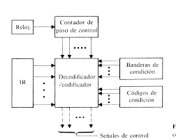

La Unidad de Control es el cerebro de la CPU, ya que se encarga de gestionar el flujo de instrucciones dentro del sistema. Su función principal es interpretar las instrucciones que provienen de la memoria y enviarlas a los componentes adecuados para su ejecución. Coordina la ALU, los registros y las operaciones de entrada/salida. Utiliza señales de control para dirigir el flujo de datos entre los diferentes subsistemas, asegurando que las operaciones se ejecuten en el orden correcto.Los programas son un conjunto de instrucciones que se almacenan en memoria. Esas instrucciones están en binario, que es el lenguaje que entiende la máquina (también se les llama instrucciones máquina).
La UC se encarga de ir ejecutando, una a una, las instrucciones.
Los pasos que da para ejecutarlas son los siguientes:
- Leer la instrucción de memoria.
- Decodificarla o, lo que es lo mismo, conocer la operación que hay que realizar.
- Ejecutarla. Para ello la unidad de control deberá enviar las señales apropiadas a la ALU, a la memoria y al subsistema de entrada/salida.
- Continuar ejecutando instrucciones hasta que se encuentre con una instrucción de fin (HALT)
